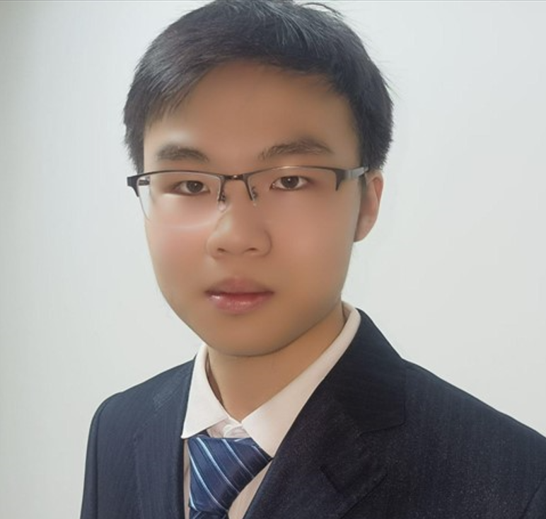
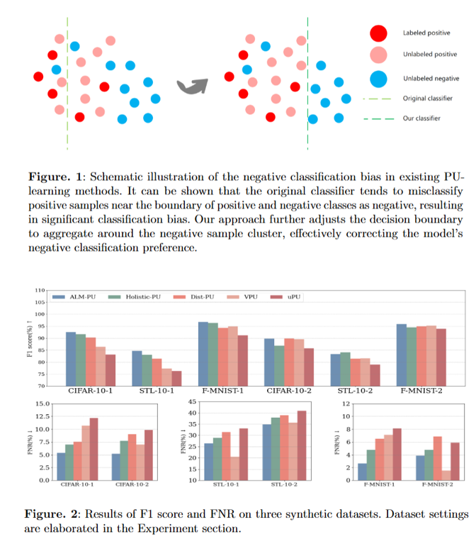
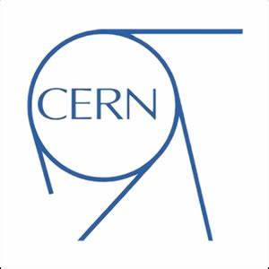

|
Jiazhe Wei (魏佳哲) Hi, there! Thanks for visiting my academic website! I'm a junior undergraduate student at Xi'an Jiaotong University in China, majoring in computer science in Qian Xuesen Honor college. I'm interested in computer vision and machine learning theory, advised by Prof. Bin Shi. I have interened at Lins Lab with Ph.D. student Peng Sun and Prof. Tao Lin. My previous research includes generative model reasoning, deep learning theory and AI security. I serve as the reponsible preson for XJTU-DeepLearning Seminar@XJTU. I'm looking for Ph.D. position starting in 26Fall!!! |
 |
{kind=link}
Publications(* indicates equal contribution)I'm interested in computer vision, generative AI, deep learning theory and graph neural network. Some papers are highlighted. |
|  |
Jiazhe Wei*, Yuefei Wu*, Ken Li, Bo Dong, Bin Shi Proceedings of European Conference for Machine Learning (ECML-PKDD, CCF-B), 2025 (initially accepted; under revision) code In order to rectify the long-standing tendency of negative classification in PU-learning, we establish an optimization problem framework for this particular semi-supervised learning paradigm and propose the ALM-PU method to enhance the classifier performance. |
Academic Experiences |
 |
Bin Shi Research Team @ XJTU
Research Assistant 2023.10 - present Conducted research on various topics including deep learning theory, computer vision and graph neural networks. Advisor: Ph.D. student Yuefei Wu, Prof. Bin Shi |
|
Lins Lab @ WLU & ZJU
Research Assistant 2024.11 - present Researching about generative model resoning and multi-modal agent. Advisor: Ph.D. student Peng Sun, Prof. Tao Lin |
|
|  |
European Nuclear Research Center (CERN)
Visiting Student 2025.01 - present Researching on antimatter detection and particle clustering detection. Advisor: Prof. Zhili Zhang |
Honors & Awards
|
Education |
|
Xi'an Jiaotong University
2022.09 - 2026.07 (Expected) B.E. in Computer Science GPA: 92.21 / 100.0 (4.00 / 4.3) Advisor: Prof. Bin Shi |
Service
|